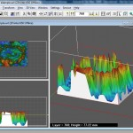

Here’s a workflow for printing 3d objects based on 3D point cloud visualisation data. It assumes access only to open source software and the Z-Print software that is shipped with a Z-Corp printer. In this example, the data represents a ground scan of an archaeological site. Here’s what you can end up with:

Click the ‘More’ link for the details.
First, using Kitware ParaView (3.4.0 in this case), read in the data. This might be easy, depending on how the data is given to you. For straight forward x,y,z points in a comma-delimited file, then I’ve found that a python script works well. Here’s how to do it. First up, use a Programmable Data Source.
Then paste in the following code into the ‘Script’ field, changing the “/path/to/datafile.csv” string to point to your CSV data file.
from paraview import vtk
import os
pts = vtk.vtkPoints()
firstline = 1
filename = os.path.normcase("/path/to/datafile.csv")
f = open(filename)
pdo = self.GetOutput()
for line in f.xreadlines():
if (firstline == 1):
#skip first line, presumed to be a header
firstline = 0
pos = 0
for word in line.split(","):
if pos > 2:
newArray = vtk.vtkDoubleArray()
newArray.SetName(word)
newArray.SetNumberOfComponents(1)
pdo.GetPointData().AddArray(newArray)
pos += 1
else:
pos = 0
for word in line.split(","):
if pos == 0:
x = float(word)
if pos == 1:
y = float(word)
if pos == 2:
z = float(word)
if pos > 2:
array = pdo.GetPointData().GetArray(pos-3)
array.InsertNextValue(float(word))
pos += 1
pts.InsertNextPoint(x,y,z)
pdo.SetPoints(pts)
Next up, this needs to be visible. One way of doing this, that produces good results is to use the ‘Mask Points’ filter (Filters -> Alphabetical -> Mask Points). Set the ‘On Ratio’ value to ’1′ and the ‘Maximum Number of Points’ to be some sensible value – I typically use ’9999999999′ to get all points. Check ‘Random’ and ‘Generate Vertices’ then move to the ‘Display’ tab and change ‘Point size’ to be ’1.0′.
An optional step is to colour the data. For this, the ‘Elevation’ filter can be used. This defaults to something usable, but you may wish to tweak the way colour is assigned, including ‘Edit Color Map…’ found in the ‘Display’ tab.
Next, use the ‘Delaunay 2D’ filter to mesh the points:
If you’re worried about normals, you could play with the ‘Generate Surface Normals’ filter at this stage along with a temporary ‘Normal Glyphs’ filter to quickly check that the generated normals are about right. This step can often be missed without worry.
Finally, export the mesh as a VRML file (File -> Export, selecting the VRML option). Once the file is saved, rename with a .WRL extension, and load into Z-Print (7.8.3-9 in this case) using the File->Import option.
Finally, and this is the easy part, select the part by clicking on it, then choose Edit->Make Solid. This will now automagically create a printable object: